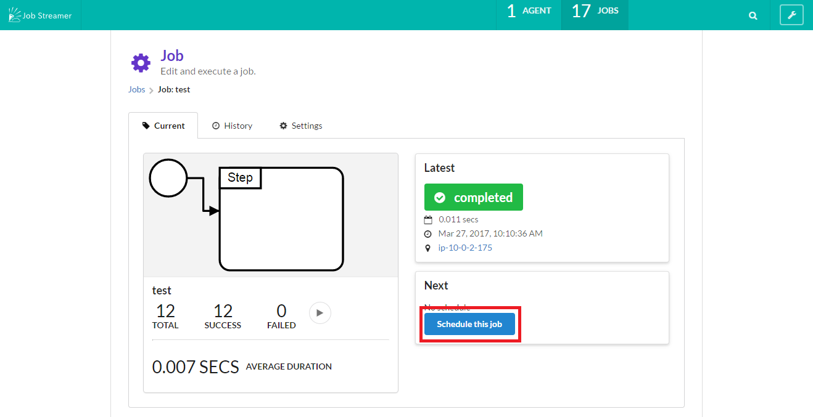

ジョブのスケジューリング
カレンダー及び cron 式を使い、ジョブの自動実行を制御することが出来ます。
カレンダーの登録方法
カレンダーを作成しジョブに紐づけることで、ジョブの実行日を指定できます。
1. 画面右上のプルダウンメニューより Calendar を選択

2. カレンダー画面にて New ボタンを押下

3. 情報を入力してカレンダー登録
Calendar name を入力し、日付を選択して Save を押下するとカレンダーが作成されます。
もし設定したい業務日付が 00:00 始まりではない場合（例えば 1/2 01:00 を 1/1 25:00とみなす等)、「Day start」の項目に一日の開始時刻を入力して下さい。

4. カレンダーをジョブに紐づける
実際にカレンダーを利用するには、以降の「スケジュールの登録方法」でジョブに紐づける必要があります。
cron 式とともにカレンダーを設定することで、カレンダーに含まれていない日付のジョブ実行を抑止することができます。
スケジュールの登録方法
カレンダーおよび cron 式でジョブ実行をスケジューリングします。
1. ジョブ詳細画面上の Next パネルからスケジュール編集画面を開く

2. スケジュールの簡易作成
Next パネル上で対話的に cron 式を組み立てることが出来ます。
2.1. スケジュールのパターン（日次・週次・月次）を選択します。

2.2. 発火時刻（時）を入力します。
2.3. Quartz format が構築されてフォームに自動入力されます。

最終的には Quartz format フォームの値が登録されます。
Quartz format を直接入力する場合は cron expressions 形式で入力して下さい。

3. カレンダーの指定
スケジュールに「カレンダーの登録方法」で登録したカレンダーを紐づけます。

4. スケジュール登録
Save ボタンでスケジュールを登録すると、ジョブの自動実行が始まります。
カレンダーと cron 式両方に合致した日時に実行されます。